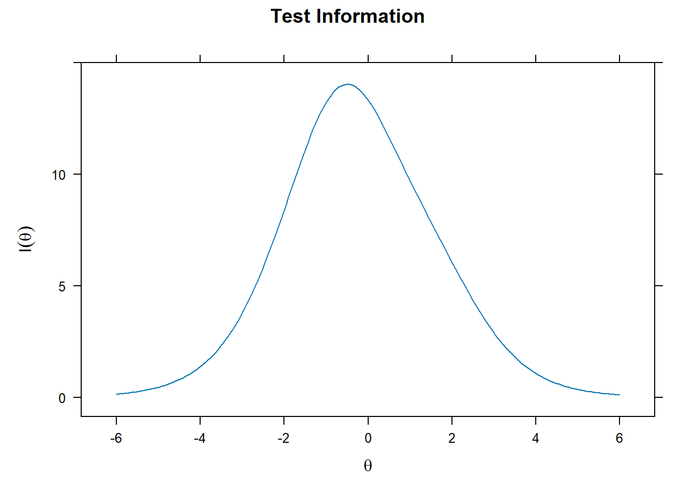
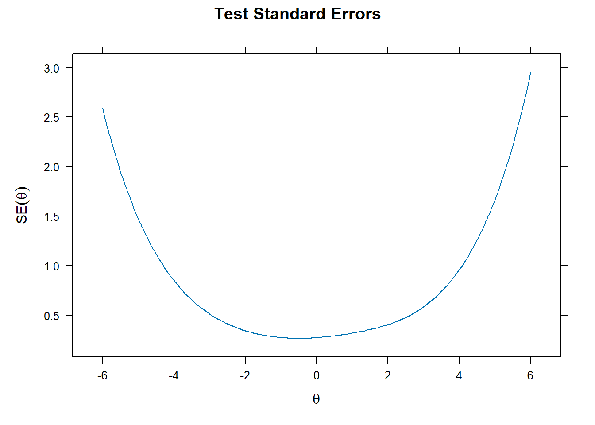
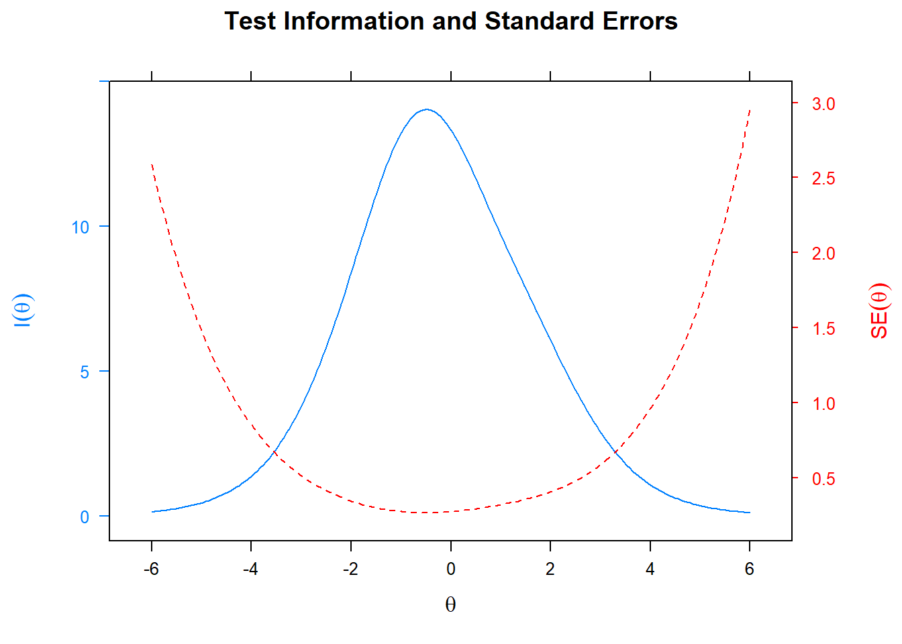
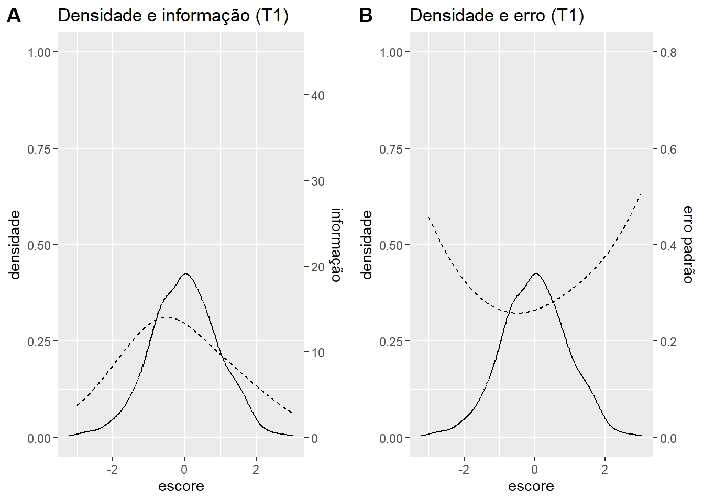

data(banco2pl.t1, package = 'oficinaTRI2025')2 Primeira aplicação
2.1 Preparação
Importar banco
Nome das variáveis do banco
names(banco2pl.t1) [1] "Item_1" "Item_2" "Item_3" "Item_4" "Item_5" "Item_6" "Item_7"
[8] "Item_8" "Item_9" "Item_10" "Item_11" "Item_12" "Item_13" "Item_14"
[15] "Item_15" "Item_16" "Item_17" "Item_18" "Item_19" "Item_20" "Item_21"
[22] "Item_22" "Item_23" "Item_24" "Item_25" "Item_26" "Item_27" "Item_28"
[29] "Item_29" "Item_30" "Item_31" "Item_32" "Item_33" "Item_34" "Item_35"
[36] "Item_36" "Item_37" "Item_38" "Item_39" "Item_40" "Item_41" "Item_42"
[43] "Item_43" "Item_44" "Item_45" "Item_46" "Item_47" "Item_48" "Item_49"
[50] "Item_50"2.2 Calibração inicial
Calibrar os itens no modelo logístico de dois parâmetros
fit.t1 <- mirt(data = banco2pl.t1, model = 1, itemtype = '2PL', TOL = .001)
Iteration: 1, Log-Lik: -24031.410, Max-Change: 0.68583
Iteration: 2, Log-Lik: -23670.397, Max-Change: 0.18645
Iteration: 3, Log-Lik: -23631.019, Max-Change: 0.10864
Iteration: 4, Log-Lik: -23611.827, Max-Change: 0.08842
Iteration: 5, Log-Lik: -23601.806, Max-Change: 0.06046
Iteration: 6, Log-Lik: -23595.519, Max-Change: 0.05344
Iteration: 7, Log-Lik: -23591.725, Max-Change: 0.03919
Iteration: 8, Log-Lik: -23589.281, Max-Change: 0.03098
Iteration: 9, Log-Lik: -23587.665, Max-Change: 0.02442
Iteration: 10, Log-Lik: -23585.265, Max-Change: 0.02800
Iteration: 11, Log-Lik: -23584.937, Max-Change: 0.01424
Iteration: 12, Log-Lik: -23584.678, Max-Change: 0.00945
Iteration: 13, Log-Lik: -23584.256, Max-Change: 0.00540
Iteration: 14, Log-Lik: -23584.159, Max-Change: 0.00463
Iteration: 15, Log-Lik: -23584.082, Max-Change: 0.00420
Iteration: 16, Log-Lik: -23583.944, Max-Change: 0.00266
Iteration: 17, Log-Lik: -23583.908, Max-Change: 0.00243
Iteration: 18, Log-Lik: -23583.880, Max-Change: 0.00187
Iteration: 19, Log-Lik: -23583.807, Max-Change: 0.00246
Iteration: 20, Log-Lik: -23583.792, Max-Change: 0.00226
Iteration: 21, Log-Lik: -23583.777, Max-Change: 0.00152
Iteration: 22, Log-Lik: -23583.765, Max-Change: 0.00273
Iteration: 23, Log-Lik: -23583.754, Max-Change: 0.00165
Iteration: 24, Log-Lik: -23583.747, Max-Change: 0.00123
Iteration: 25, Log-Lik: -23583.735, Max-Change: 0.00128
Iteration: 26, Log-Lik: -23583.729, Max-Change: 0.00109
Iteration: 27, Log-Lik: -23583.725, Max-Change: 0.00089Verificar os parâmetros dos itens
head(coef(fit.t1))$Item_1
a1 d g u
par 0.9157567 1.621848 0 1
$Item_2
a1 d g u
par 1.550628 0.3947614 0 1
$Item_3
a1 d g u
par 1.628012 2.047865 0 1
$Item_4
a1 d g u
par 1.553342 1.093896 0 1
$Item_5
a1 d g u
par 2.039761 2.761051 0 1
$Item_6
a1 d g u
par 1.78877 -0.1521495 0 1Verificar os parâmetros dos itens de forma simplificada
coef(fit.t1, simplify = TRUE)$items
a1 d g u
Item_1 0.916 1.622 0 1
Item_2 1.551 0.395 0 1
Item_3 1.628 2.048 0 1
Item_4 1.553 1.094 0 1
Item_5 2.040 2.761 0 1
Item_6 1.789 -0.152 0 1
Item_7 0.760 0.801 0 1
Item_8 0.912 1.181 0 1
Item_9 1.820 1.957 0 1
Item_10 1.474 2.787 0 1
Item_11 1.645 2.419 0 1
Item_12 1.410 3.414 0 1
Item_13 1.263 2.079 0 1
Item_14 2.153 1.877 0 1
Item_15 1.118 1.302 0 1
Item_16 1.851 -0.646 0 1
Item_17 1.137 1.673 0 1
Item_18 1.081 1.381 0 1
Item_19 1.168 0.848 0 1
Item_20 1.071 1.577 0 1
Item_21 1.131 1.678 0 1
Item_22 1.123 1.630 0 1
Item_23 0.885 1.339 0 1
Item_24 0.794 0.907 0 1
Item_25 0.931 0.967 0 1
Item_26 1.780 3.566 0 1
Item_27 1.400 1.645 0 1
Item_28 1.920 2.902 0 1
Item_29 1.770 2.641 0 1
Item_30 0.819 0.585 0 1
Item_31 1.393 0.323 0 1
Item_32 1.141 -0.549 0 1
Item_33 1.112 1.299 0 1
Item_34 1.202 -0.652 0 1
Item_35 0.854 1.358 0 1
Item_36 1.774 0.409 0 1
Item_37 1.104 -1.139 0 1
Item_38 1.145 0.748 0 1
Item_39 2.156 2.431 0 1
Item_40 1.872 1.332 0 1
Item_41 1.720 -0.814 0 1
Item_42 1.690 2.514 0 1
Item_43 1.206 -0.152 0 1
Item_44 1.681 -0.375 0 1
Item_45 1.288 0.489 0 1
Item_46 1.351 0.932 0 1
Item_47 1.995 1.845 0 1
Item_48 1.510 1.479 0 1
Item_49 1.059 0.296 0 1
Item_50 1.850 -1.241 0 1
$means
F1
0
$cov
F1
F1 1Verificar os parâmetros dos itens na TRI (dificuldade em vez do intercepto) de forma simplificada
coef(fit.t1, IRTpars = TRUE, simplify = TRUE)$items
a b g u
Item_1 0.916 -1.771 0 1
Item_2 1.551 -0.255 0 1
Item_3 1.628 -1.258 0 1
Item_4 1.553 -0.704 0 1
Item_5 2.040 -1.354 0 1
Item_6 1.789 0.085 0 1
Item_7 0.760 -1.054 0 1
Item_8 0.912 -1.294 0 1
Item_9 1.820 -1.076 0 1
Item_10 1.474 -1.892 0 1
Item_11 1.645 -1.470 0 1
Item_12 1.410 -2.421 0 1
Item_13 1.263 -1.646 0 1
Item_14 2.153 -0.872 0 1
Item_15 1.118 -1.165 0 1
Item_16 1.851 0.349 0 1
Item_17 1.137 -1.472 0 1
Item_18 1.081 -1.278 0 1
Item_19 1.168 -0.726 0 1
Item_20 1.071 -1.472 0 1
Item_21 1.131 -1.483 0 1
Item_22 1.123 -1.452 0 1
Item_23 0.885 -1.513 0 1
Item_24 0.794 -1.142 0 1
Item_25 0.931 -1.038 0 1
Item_26 1.780 -2.003 0 1
Item_27 1.400 -1.175 0 1
Item_28 1.920 -1.512 0 1
Item_29 1.770 -1.492 0 1
Item_30 0.819 -0.715 0 1
Item_31 1.393 -0.232 0 1
Item_32 1.141 0.481 0 1
Item_33 1.112 -1.169 0 1
Item_34 1.202 0.543 0 1
Item_35 0.854 -1.589 0 1
Item_36 1.774 -0.230 0 1
Item_37 1.104 1.032 0 1
Item_38 1.145 -0.653 0 1
Item_39 2.156 -1.128 0 1
Item_40 1.872 -0.711 0 1
Item_41 1.720 0.473 0 1
Item_42 1.690 -1.487 0 1
Item_43 1.206 0.126 0 1
Item_44 1.681 0.223 0 1
Item_45 1.288 -0.380 0 1
Item_46 1.351 -0.689 0 1
Item_47 1.995 -0.925 0 1
Item_48 1.510 -0.979 0 1
Item_49 1.059 -0.279 0 1
Item_50 1.850 0.671 0 1
$means
F1
0
$cov
F1
F1 1Armazenar os parâmetros em um objeto
pars.t1 <- data.frame(coef(fit.t1, IRTpars = TRUE, simplify = TRUE)$items)
head(pars.t1) a b g u
Item_1 0.9157567 -1.77104736 0 1
Item_2 1.5506280 -0.25458160 0 1
Item_3 1.6280118 -1.25789323 0 1
Item_4 1.5533415 -0.70422109 0 1
Item_5 2.0397609 -1.35361528 0 1
Item_6 1.7887696 0.08505819 0 12.3 Análise gráfica dos itens e do teste
Curva de informação do teste
plot(fit.t1, type = 'info')
Erro padrão de medida em função do escore
plot(fit.t1, type = 'SE')
Informação do teste e erro padrão
plot(fit.t1, type = 'infoSE')
Curva característica de cada item
plot(fit.t1, type = 'trace')2.4 Estimação do escore dos sujeitos
Calcular o escore dos sujeitos e o erro de medida
escore.t1 <- data.frame(fscores(object = fit.t1, full.scores.SE = TRUE))
head(escore.t1) F1 SE_F1
1 0.9288168 0.3259053
2 0.0763906 0.2512661
3 0.1340035 0.2546634
4 0.5101869 0.2819824
5 0.1202826 0.2538378
6 0.6447778 0.29436012.5 Avaliação do instrumento T1 e cobertura do construto
Gráficos com a curva de densidade da amostra, informação do teste e erro de medida na calibração T1.
info_t1 <- testinfo(fit.t1, seq(-3, 3, .01))
grafico_t1_info <- ggplot() +
geom_density(aes(x = escore.t1$F1)) +
labs(title='Densidade e informação (T1)', x= "escore", y = "densidade") +
geom_line(aes(x = seq(-3, 3, .01), y = info_t1 / 45), linetype = 2) +
geom_vline(xintercept = c(-1.5, 1.5), linetype = 2, linewidth = .3) +
scale_y_continuous(limits = c(0, 1),
sec.axis = sec_axis(~ . * 45, name = 'informação'))
erro_t1 <- 1/sqrt(info_t1 + 1)
grafico_t1_erro <- ggplot() +
geom_density(aes(x = escore.t1$F1)) +
labs(title='Densidade e erro (T1)', x= "escore", y = "densidade") +
geom_line(aes(x = seq(-3, 3, .01), y = erro_t1 / .8), linetype = 2) +
geom_vline(xintercept = c(-1.5, 1.5), linetype = 2, linewidth = .3) +
scale_y_continuous(limits = c(0, 1),
sec.axis = sec_axis(~ . * .8, name = 'erro padrão'))
plot_grid(grafico_t1_info, grafico_t1_erro,
labels = c('A', 'B'),
ncol = 2)
Conclusão: se quisermos um erro de 0.3, existe uma lacuna no instrumento para medir os sujeitos com maior magnitude do traço latente. Precisamos ampliar nosso banco com itens mais difíceis.